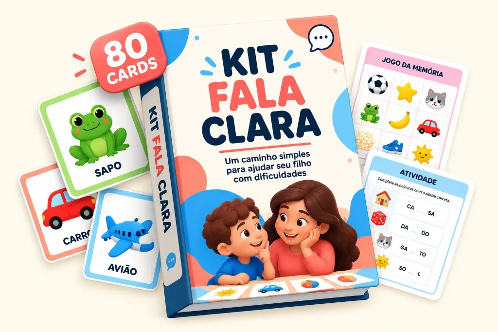
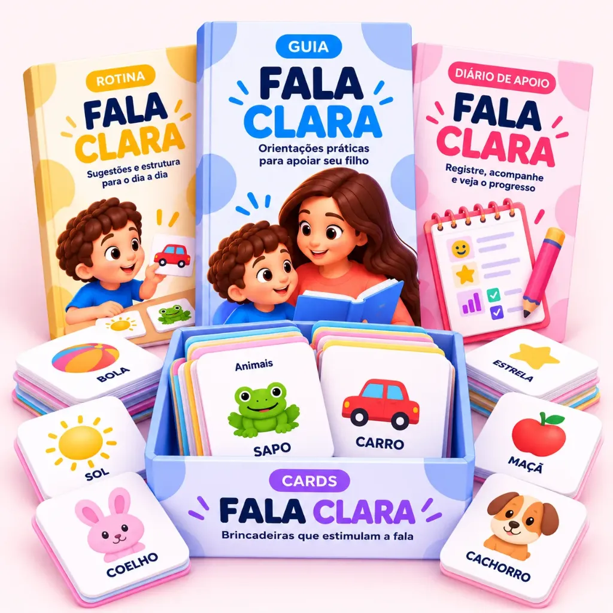

1
Receba diretamente no seu e-mail
Logo após a confirmação do pagamento, você recebe o acesso completo diretamente no seu e-mail para baixar o material digital e começar a usar quando quiser.

Com o KIT FALA CLARA, você encontra um caminho simples para começar a ajudar em casa, com 80 cards e materiais organizados para transformar a dúvida “o que eu faço?” em momentos de prática e desenvolvimento.
Talvez você já tenha percebido que seu filho tem dificuldade para falar determinados sons.
Você quer participar mais. Procura atividades. Tenta praticar algumas palavras.
Mas, quando chega a hora de fazer isso em casa, surge a dúvida:
"O que eu faço agora?"
SOMENTE HOJE, você vai levar JOGOS, ATIVIDADES e GUIAS, sem pagar nada a mais.
Logo após a confirmação do pagamento, você recebe o acesso completo diretamente no seu e-mail para baixar o material digital e começar a usar quando quiser.
Recorte os cartões e plastifique se quiser mais resistência no uso diário.
Leve para casa, escola, terapia, passeios ou momentos de transição.
O KIT FALA CLARA é um material educativo e lúdico para apoiar a prática em casa. Por isso, é muito importante lembrar que ele não é:
Em caso de preocupações com a fala, consulte um profissional. O KIT FALA CLARA ajuda a tornar a prática em casa mais leve e organizada.

Conheça o material com tranquilidade.
Se por qualquer motivo o material não atender às suas expectativas, você tem até 7 dias para solicitar o reembolso integral, sem perguntas nem complicações!
Você não precisa transformar a prática em mais uma tarefa complicada do dia.
Também não precisa passar horas procurando atividades ou tentando descobrir o que fazer a cada momento.
Menos improviso.
Mais direção.
Tudo organizado para você.
Só de ter um material muito bem organizado e ter conseguido ele num preço muito bom, vou conseguir dedicar mais tempo ao meu filho do que perder tempo procurando em vários lugares, e olha que já pesquisei e nunca encontro nada.